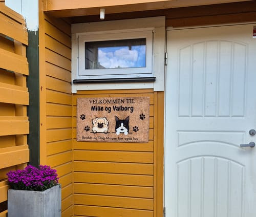

d2c personalized pet products · consultant · jan 2024 — dec 2024
oslowuff
I advised an investor who wanted to launch a personalized pet products brand in e-commerce. I steered him toward the Norwegian market, where I'd already built my previous successes, and managed strategy and acquisition end to end, generating €150k in revenue, powered by a micro-seeding machine that made awareness, social proof and content almost free.

my role
- creative strategist (consultant)
- market selection & positioning
- micro-seeding & creator flow
- meta & snapchat acquisition
- product sourcing & pod integration
- team building & management
deliverables
- go-to-market strategy
- micro-seeding operation (awareness · social proof · content)
- meta + snapchat campaigns (€35k)
- product sourcing via china-based agent
- pod technical integration
- 3-person team (video editor · support · intern)
the starting point
Personalized products convert very well: their uniqueness opens up multiple marketing angles. But every order being unique means the operational chain, from fulfilment to creative diversification, has to hold up behind the promise, which meant selecting suppliers carefully while keeping the model sustainable for the brand.
The market was chosen deliberately: a country full of dog owners with strong online purchase behavior. The real question was how to build awareness and trust for an unknown brand without burning the budget on cold traffic.
what actually moved the needle?
The market did half the work: around 17% of Norwegian households own a dog, and Norwegian online shoppers are among the world's biggest spenders, averaging roughly €2,470 a year online, one of the highest figures globally. A country full of dog owners with deep online buying habits: exactly where an emotional, personalized product converts.
The cheapest creative is the one your customers make for you. By seeding personalized products to micro-creators and real dog owners, we got three assets in one, awareness in their communities, social proof for the funnel, and a constant stream of authentic content to feed the ads, at a fraction of production cost.
And talking to customers changed the way we positioned the product itself: one customer hung their doormat on the wall because it was too cute to walk on. That conversation revealed a whole new pocket of audience, people buying the mat as personalized decor, not as a doormat, and gave us a fresh angle to target.
our customers made the ads, carried the proof, and even found uses for the product we'd never imagined.
the marketing strategy
I built a micro-seeding flow as the acquisition engine's first layer: identifying micro-creators and dog-owner profiles, sending personalized products, and turning every delivery into content, reviews and reach, almost for free. That pipeline fed the paid layer: Meta and Snapchat campaigns (€35k) built on the emotional payoff of personalization, amplified by real customers' content.
I stayed close to the customers themselves, and when one hung the mat on a wall instead of the floor, we turned it into a new targeting angle: personalized home decor for dog lovers. On the supply side, I handled product sourcing through an agent based in China and managed the print-on-demand integration, so the fulfilment chain, from raw product to personalized order, scaled cleanly and kept its margins.
None of it ran solo: I built and managed a small team around the operation. I selected a video editor for the creative pipeline, hired a customer support agent through a structured selection process, and directed an intern who ran the day-to-day micro-seeding flow.
"It was so cute I didn't want to ruin the doormat, so I hung it on the wall."Customer conversation that opened a new audience

the work
selected creative
image creative